PEUGEOT 208
2021 - 39.000 km
El Nuevo Peugeot 208, está tecnológicamente pensado y diseñado para que el protagonista seas vos. Con una posición de manejo completamente renovada, el puesto de conducción está diseñado para sentir toda la tecnología al alcance de tu mano.
Consultas
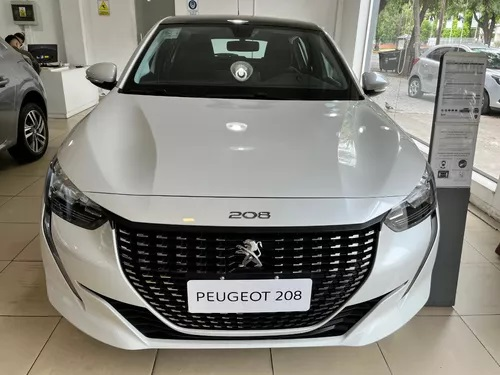
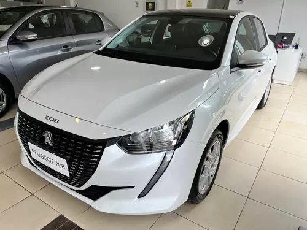
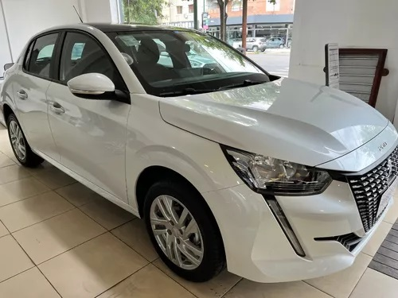
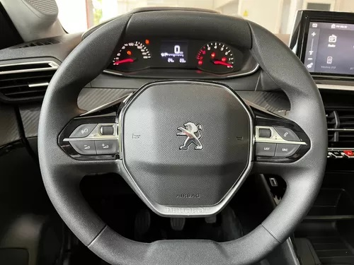
FORD FIESTA
2018 - 82.000 km
El diseño exterior del Fiesta transmite su personalidad única, seductora y cautivante, irresistible por donde se lo mire.
Consultas
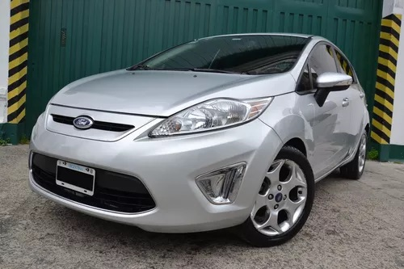
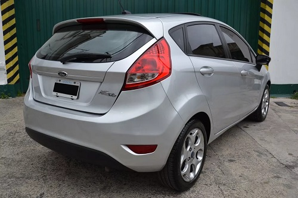
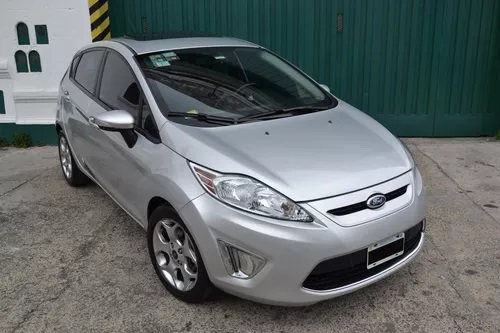
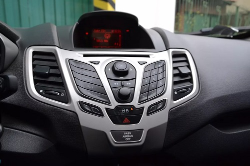
FIAT CRONOS
2022 - 19.000 km
El Fiat Cronos 1.3 Drive Pack Plus MT es un coche ideal para la familia y la ciudad. Es un auto que en líneas generales es espacioso, lo que hace que sea un vehículo dócil y con personalidad.
Consultas
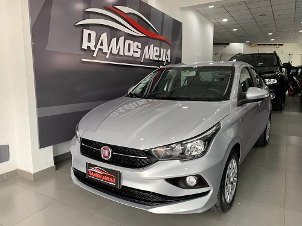
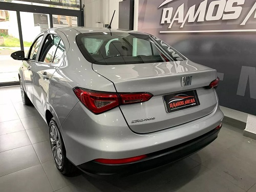
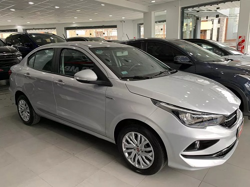
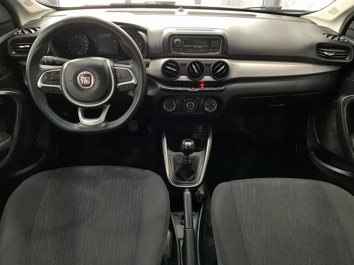
NUESTROS VEHICULOS
"Automotores-Codocar" es la agencia de autos perfecta para los entusiastas de los vehículos, ofreciendo una amplia y diversa selección de automóviles que abarcan desde elegantes sedanes hasta potentes SUV, versátiles vehículos utilitarios deportivos y autos eléctricos ecológicos. Con más de una década de experiencia en la industria automotriz, en Automotores-Codocar, nos enorgullece ser el destino donde los sueños de la conducción se hacen realidad.
Nuestra selección incluye modelos de algunas de las marcas más prestigiosas y confiables en el mercado. Desde el icónico Peugeot 208 hasta el elegante Ford Fiesta, ofrecemos opciones que se adaptan a todos los gustos y necesidades. Cada automóvil en nuestra agencia ha sido cuidadosamente seleccionado por nuestro equipo de expertos en automóviles para garantizar la máxima calidad y desempeño.
Si buscas la combinación perfecta de estilo y comodidad, nuestros sedanes ofrecen una experiencia de conducción suave y lujosa. Para aquellos que prefieren aventuras todoterreno, nuestros SUV y vehículos utilitarios deportivos te llevarán a donde quieras llegar con confianza. Además, estamos comprometidos con un futuro sostenible, por lo que también ofrecemos una selección de autos eléctricos y híbridos que son amigables con el medio ambiente y eficientes en combustible.
En Automotores-Codocar, no solo vendemos autos, creamos experiencias. Nuestro personal altamente capacitado está dedicado a ayudarte a encontrar el automóvil que se adapte a tu estilo de vida y presupuesto. Ya sea que estés buscando tu primer auto, un vehículo familiar espacioso o un coche de lujo, estamos aquí para guiar tu elección y brindarte un servicio excepcional.
Visita nuestra agencia de autos "Automotores-Codocar" hoy mismo y descubre el mundo de posibilidades que tenemos para ti. Experimenta la emoción de elegir el auto perfecto que te llevará a nuevas aventuras y experiencias inolvidables.